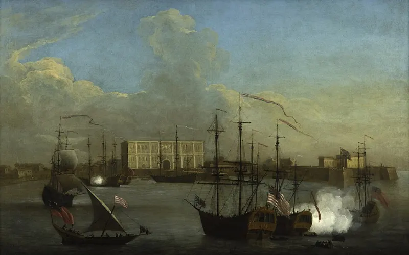
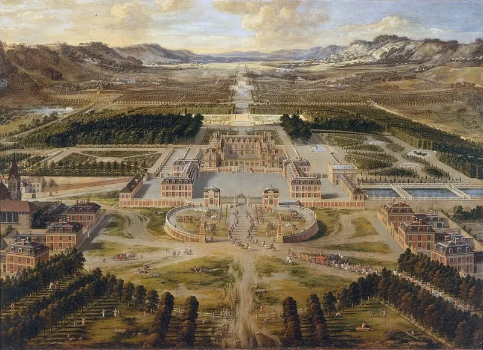
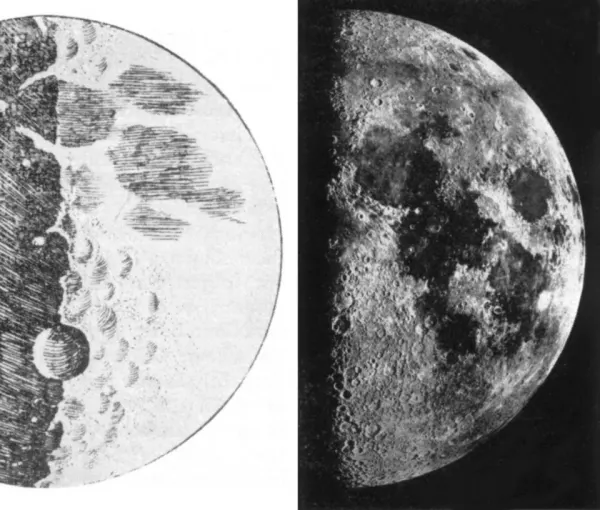
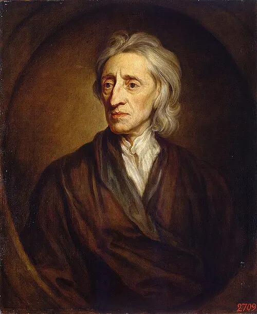
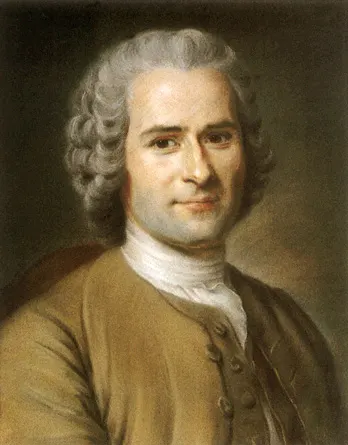

각 나라는 전쟁을 하려고 화약 무기를 개발하고 군대를 길렀으며, 그 비용을 마련하려고 정부 차원에서 세금을 거뒀다.
이 과정에서 정부가 군사와 재정(나라 살림 돈)을 독점한 재정·군사 국가가 나타났다.
⛪ 구교·신교 분열→⚔️ 전쟁 ↑→💣 화약 무기·군대→💸 돈 필요 → 세금→🏛️ 재정·군사 국가
📋관료제세금 걷기 같은 나랏일을 효율적으로 처리하는 관리 조직
💂상비군언제든지 동원할 수 있는 군대 → 전문적인 군사력 유지
👑왕권신수설“왕의 권력은 신이 준 것!” → 이것으로 왕의 힘을 정당화
관료제와 상비군을 유지하려면 돈이 더 필요했다. 그래서 상공업·무역에 종사하는 시민 계층의 활동을 보호해 주고 그들에게서 재정 지원을 받았다.
그리고 상업을 중시하는 중상주의 정책을 펼쳤다.
쉽게 말하면, 왕이 “군대와 관리를 계속 두려면 돈이 필요해. 장사하는 사람들아, 내가 지켜 줄 테니 돈을 대 줘!” 하고 손을 잡은 거야.
② 돈이 곧 힘이다! 중상주의 정책132쪽
➊ 국내 상공업 보호
부강한 나라를 만들려고 나라가 경제 활동에 적극적으로 끼어들고 통제했다.
수입은 억제하고 수출은 장려하며 많은 양의 금과 은을 확보하려 했다.
일부 특권 상인에게 무역 독점권을 주고, 그 대가로 헌금과 세금을 정부에 바치게 했다.
🏰우리나라
📦 완성품 수출 장려 · 🚫 원료 수출 금지 →
← 🧾 수입품에 높은 관세 · 🚫 완성품 수입 금지
🌍다른 나라
관세 수출되거나 수입되는 물건에 붙이는 세금
원료는 밖으로 못 나가게 하고, 우리나라에서 만든 완성품을 많이 팔아서 금과 은을 잔뜩 모으자는 거야. 외국 물건엔 세금을 왕창 붙여서 덜 사게 했고!
➋ 해외 시장 확보
원료를 얻고 상품을 팔 시장을 얻으려고 식민지 확보에도 적극적으로 나섰다.
특히 영국과 프랑스는 동인도 회사를 통해 아시아 곳곳을 점령해 거점을 만들고 독점적인 무역을 했다.

인도 뭄바이(봄베이)의 영국 동인도 회사 (조지 램버트·새뮤얼 스콧, 1731년 무렵)
동인도 회사는 본사를 본국에 두고, 아시아의 거점에도 건물을 세워 무역을 했어. 중상주의로 크게 성장한 계층은? (탐구1의 답) 나라의 보호를 받으며 장사·무역을 한 시민 계층(상공업자)이야.
③ 유럽 각지의 재정·군사 국가133쪽
대표적인 재정·군사 국가는 영국과 프랑스. 영국은 왕과 의회가 타협해 의회 정치를 발전시켰고, 프랑스는 의회를 무시하고 절대 왕권을 정당화했다.
🇬🇧 영국 — 의회가 왕을 견제하다
16세기~농촌의 지주와 도시의 시민이 의회에 많이 진출. 이들 중에는 청교도가 많았다.
17세기청교도 중심의 의회가 왕의 탄압에 무력으로 맞서 왕을 처형하고 공화정을 세움
→왕정이 부활하고 왕이 다시 전제 정치 → 의회가 왕을 추방하고 새 왕을 추대
→왕에게 의회의 권한을 존중한 법안을 승인받음 → 입헌 군주정의 토대
청교도 영국의 칼뱅파 신교도, 영국 국교회에 반대했다 · 입헌 군주정 왕의 권력이 헌법이나 의회에 일정한 제약을 받는 정치 형태
🇫🇷 프랑스 — 태양왕의 절대 왕권
루이 14세 (이아생트 리고, 1701)
‘태양왕’을 자처한 루이 14세가 강력한 상비군과 관료제를 바탕으로 절대 권력을 누렸다.
베르사유 궁전을 지어 자신의 권위를 뽐냈다.
그러나 통치 후반기에는 무리한 대외 전쟁으로 재정이 나빠지고 부패와 사치가 심해졌다.

17세기 베르사유 궁전 (피에르 파텔, 1668)
동유럽 — 늦게 나타난 재정·군사 국가
도시와 상공업의 발달이 늦었던 동유럽에서는 농노제가 오래 유지되어 서유럽보다 늦게 재정·군사 국가가 나타났다.
러시아와 프로이센에서는 계몽사상의 영향을 받은 군주들이 나타나 개혁을 추진하기도 했다.
계몽사상 인간의 이성을 믿고, 이성으로 사회를 발전시킬 수 있다고 믿는 사상
🇬🇧 영국왕과 의회의 타협 → 의회 정치 발전 → 입헌 군주정
🇫🇷 프랑스의회 무시 → 절대 왕권 (루이 14세·베르사유 궁전)
함께 확인해요 ➊ 재정·군사 국가는 상업을 중시하는 (중상주의) 정책을 폈다. ➋ 계몽사상에 영향을 받은 군주 → 프리드리히 2세(프로이센), 표트르 대제(러시아)
생각 쑥쑥 탐구 · 새로운 변화의 시작, 과학 혁명과 계몽사상
17세기 유럽에서는 ‘과학 혁명’이라고 할 만큼 과학이 눈부시게 발전했어. 재정·군사 국가들이 과학자의 연구를 후원하면서 유럽 곳곳에 학회가 생겼고, 이 흐름은 계몽사상으로 이어져 사회 개혁의 바탕이 됐어.
④ 재판정에 선 과학자, 갈릴레이134쪽
갈릴레이 (유스투스 서스테르만스, 1636)
과학 혁명은 천문학에서 시작됐고, 그 중심에 갈릴레이가 있었다.
망원경으로 별을 관찰해 천동설(모든 것이 지구를 중심으로 돈다)을 반박하고, 지동설(태양이 중심, 지구가 태양 주위를 돈다)을 지지하는 책을 냈다.
🌍 천동설 (옛날 생각)지구가 가운데, 태양이 지구 둘레를 돈다 → 크리스트교(가톨릭교회)의 견해
☀️ 지동설 (갈릴레이가 지지)태양이 가운데, 지구가 태양 둘레를 돈다
갈릴레이의 주장은 당시 크리스트교의 견해를 정면으로 거스르는 것이었다.
종교 개혁을 거치며 보수적으로 변한 가톨릭교회는 갈릴레이를 종교 재판에 세워 생각이 틀렸다고 인정하라고 강요했고, 갈릴레이는 결국 지동설 지지를 포기했다.
그러나 인쇄술이 발전하면서 그의 연구가 많은 사람에게 퍼졌고, 유럽인의 우주관이 바뀌었다.

갈릴레이가 그린 달(왼쪽)과 실제 달 사진(오른쪽)
갈릴레이는 인류 최초로 달 표면이 울퉁불퉁하다는 것을 발견했다.
지구뿐 아니라 다른 행성에도 위성이 있다는 것을 증명했다.
⑤ 만유인력의 법칙을 발견한 뉴턴135쪽
뉴턴 (고드프리 넬러, 1689)
17세기의 뉴턴은 만유인력의 법칙 등 여러 과학 법칙을 발견해 자연 현상을 합리적으로 이해하게 했다.
만유인력: 우주의 모든 물체가 서로 끌어당기는 힘. 질량이 클수록 세지고, 거리가 멀수록 약해진다. 뉴턴은 이를 수학적으로 증명했다.
자연의 모든 것이 일정한 법칙에 따라 움직이는 거대한 기계와 같다는 기계론적 세계관을 제시했다.
과학 혁명의 연구 성과를 정리·체계화해 과학 혁명을 완성했다는 평가를 받는다.
이런 과학자들 덕분에 사람들은 “인간의 이성으로 세상의 법칙을 알아낼 수 있구나!” 하고 이성에 믿음을 갖게 됐어. 이게 바로 계몽사상으로 이어져.
⑥ 인간의 이성을 믿은 로크와 루소135쪽
계몽사상가들은 인간이 가진 이성의 빛으로 무지·미신·무비판적인 믿음·불합리한 전통 같은 어둠을 밝힐 수 있다고 믿었다.
유럽 사회의 나쁜 전통과 관습을 깨고 자유롭고 평등한 사회를 만들고자 했다.
계몽사상가들의 주장은 이후 미국 혁명과 프랑스 혁명의 사상적 배경이 됐다.

로크 — 저항권사람들이 자연권을 지키려고 계약을 맺어 정부를 만들었다. 정부가 자유·생명·재산의 권리를 지켜 주지 않고 빼앗으면 저항할 수 있다.

루소 — 국민 주권사람들이 사회 계약으로 나라를 만들었으니 나라의 주인(주권)은 국민. 개인 이익보다 공동체 전체의 이익을 위해 국민이 직접 나라 통치에 참여해야 한다.
자연권 사람이 태어나면서부터 갖는 고유한 권리 (자유·생명·재산 등)
함께 탐구해요 — 135쪽
➊ 과학 혁명 시기의 과학자 → 코페르니쿠스(지동설을 처음 주장), 케플러(행성이 태양 둘레를 타원 궤도로 돈다는 법칙), 갈릴레이, 뉴턴
➋ 과학 혁명이 계몽사상에 준 영향 → 이성으로 자연의 법칙을 밝혀낼 수 있다는 걸 보고, 사람들은 이성으로 사회의 잘못된 전통도 고칠 수 있다고 믿게 됐어.
➌ 지배층은 로크·루소를 어떻게 생각했을까? → 왕의 권력은 신이 준 것(왕권신수설)이라고 했던 왕과 귀족에게, “정부에 저항할 수 있다”, “주권은 국민에게 있다”는 말은 자기 권력을 흔드는 위험한 생각이었을 거야.
⑦ 대단원 마무리 — 신항로 개척 이후 세계의 변화138쪽
아메리카
아스테카·잉카 제국 멸망, 원주민 인구 급감, 금·은 광산과 플랜테이션 개발
유럽
대서양 중심의 삼각 무역, 금은이 대규모로 들어와 물가 상승, 상업 발달(상업 혁명)
아시아
면직물·향신료·차·도자기·비단 등을 유럽에 수출, 막대한 양의 은 유입
아프리카
많은 사람이 노예로 아메리카에 끌려감 (노예 무역)
플랜테이션은 오늘날에도 문제를 일으켜. 2019년 아마존 산불(숲을 없애고 기업형 농업을 하려고 낸 불), 열대 우림을 밀어내는 팜유 농장, 한 가지 품종만 기르다 병에 약해진 바나나 농업(농약·토양 오염), 그리고 낮은 임금·아동 노동 같은 노동 문제까지. (139쪽 역사로 세상 읽기)
3. 꼭 외울 것
재정·군사 국가정부가 군사와 재정을 독점 · 배경: 봉건 질서 쇠퇴 + 구교·신교 분열 → 전쟁
세 기둥관료제(효율적 업무) · 상비군(언제든 동원) · 왕권신수설(왕권은 신이 줌)
시민 계층상공업·무역 종사자, 국가 보호 ↔ 재정 지원 → 중상주의로 성장
중상주의수입 억제·수출 장려·금은 확보 · 높은 관세 · 완성품 수입 금지·원료 수출 금지 · 특권 상인 독점권
해외 시장식민지 확보 · 영국·프랑스 동인도 회사
영국왕·의회 타협 → 의회 정치 · 청교도 의회가 왕 처형·공화정 → 왕 추방·새 왕 → 입헌 군주정
프랑스의회 무시, 절대 왕권 · 태양왕 루이 14세 · 베르사유 궁전 · 후반 재정 악화
동유럽농노제 → 늦게 등장 · 러시아·프로이센 계몽 군주(표트르 대제·프리드리히 2세)
갈릴레이망원경, 지동설 지지 → 종교 재판 · 달 표면 울퉁불퉁 · 인쇄술로 연구 확산
뉴턴만유인력의 법칙 · 기계론적 세계관 · 과학 혁명 완성
계몽사상이성으로 사회 발전 · 미국 혁명·프랑스 혁명의 사상적 배경
로크 / 루소저항권(자유·생명·재산) / 국민 주권(직접 참여)
4. 퀴즈
그림 출처: 위키미디어 공용 — 뭄바이의 영국 동인도 회사(조지 램버트·새뮤얼 스콧, 퍼블릭 도메인), 루이 14세(이아생트 리고와 공방, 퍼블릭 도메인), 베르사유 궁전(피에르 파텔, 퍼블릭 도메인), 갈릴레이(유스투스 서스테르만스, 퍼블릭 도메인), 갈릴레이의 달 그림 비교(퍼블릭 도메인), 뉴턴·로크(고드프리 넬러, 퍼블릭 도메인), 루소(모리스 캉탱 드 라투르, 퍼블릭 도메인). 천동설·지동설 그림은 직접 그림.